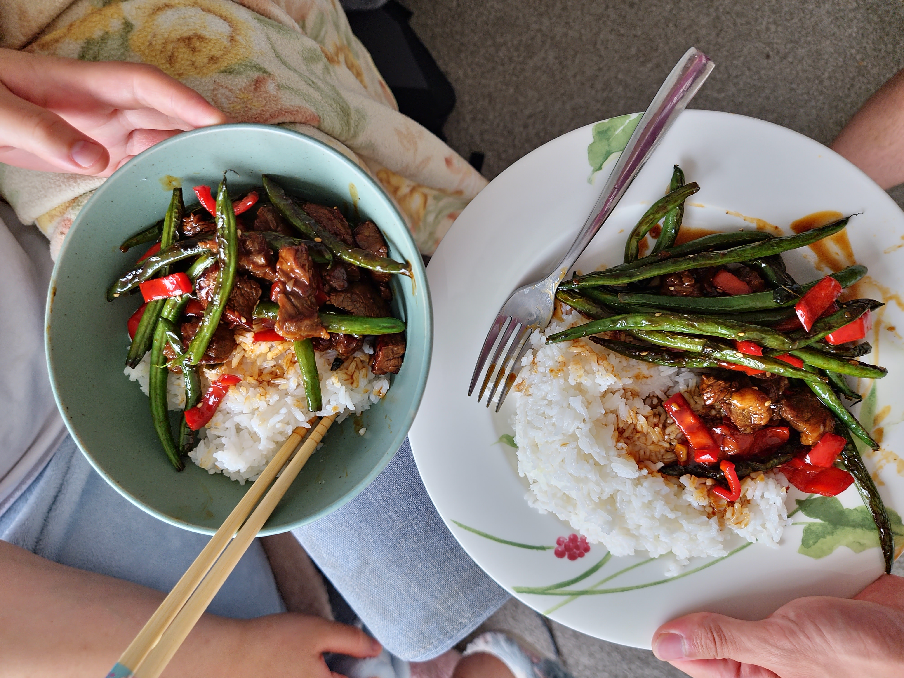

Beef and Beans

Description
Stir fried soft beef slices, crispy sweet capsicum and charred beans in a chinese dark sauce
ingredients
- 300g beef steak
- 1 whole pepper (red/green)
- 1 onion (cubed)
- 1 tsp ginger + spring onion + garlic
- 1 tbsp black bean sauce
- sauce
- sugar
- corn starch
- light soy + shaoxing wine
- marinade (dark soy / oyster / water + any others )
steps
- cut up all vegetables (garlic, beans, capsicum, and beef and prepare sauces
- marinade beef and let sit for about 15 minutes
- add oil to pan and cook beef on high heat for about 2 minutes to keep tenderness
- add capsicum and let cook quickly
- remove from heat and now add beans and add garlic when ready
- add the sauce to the beans pan and let it simmer together before adding in beef + capsicum
- garnish with sesame oil, seeds, spring onion and eat